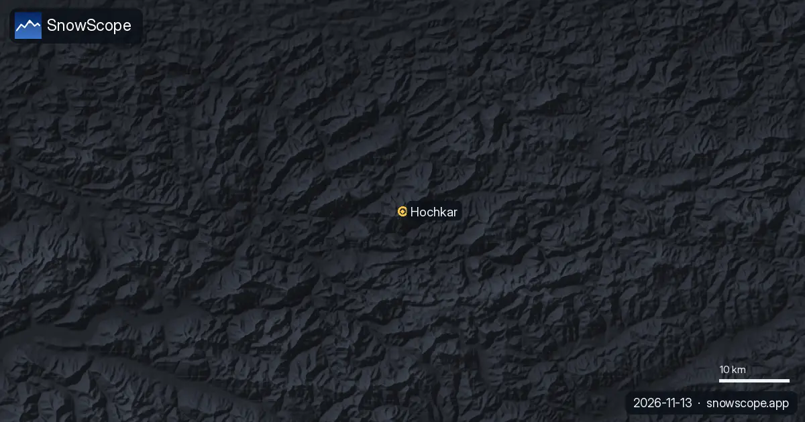

Hochkar en diciembre: fin de semana barato en Baja Austria, si hay nieve
¿Hay suficiente nieve en el Hochkar en diciembre? A menudo sí, no siempre: un 15 de diciembre típico la media montaña (1583 m) tiene 38 cm en nuestros 46 inviernos de histórico, y el 63 % de los inviernos tenía 30 cm o más la semana del 15 al 21 de diciembre. El precio es lo fácil: en el calendario oficial en línea, el día empieza en 32,90 EUR en las fechas tranquilas de diciembre.
Consulta la previsión de nieve en tiempo real de Hochkar en la app SnowScopeEspesor de nieve, alertas de nieve polvo y mapa 3D, gratis.
¿Hay nieve en diciembre? Las cifras
El Hochkar es la estación alta de Baja Austria, una escapada clásica de fin de semana desde Viena. Sus remontes van de 1378 m a 1788 m, con 19 km de pistas cartografiadas y 9 remontes. Para los Alpes orientales es alto, y en ninguno de nuestros 46 inviernos el suelo estaba pelado abajo el 15 de diciembre.
Pero «no pelado» no es «bueno». La parte de inviernos con 30 cm o más a media montaña es del 52 % del 1 al 7 de diciembre, 59 % del 8 al 14, 63 % del 15 al 21 y 74 % en Navidad. En un año flojo (1 de cada 10) la media montaña solo tiene 10 cm el 15 de diciembre.


Tres alturas, tres respuestas
Abajo, un 15 de diciembre típico tiene 32 cm, a media montaña 38 cm y en la cima 49 cm. Arriba es donde diciembre funciona mejor: 72 % de inviernos con 30 cm la semana del 15 al 21 de diciembre y 80 % en Navidad.
La tendencia pide prudencia. La media de diciembre a media montaña bajó de 51 cm en los primeros 15 inviernos a 29 cm en los últimos 15. El invierno pasado solo había 2 cm el 15 de diciembre.
El precio
El Hochkar vende los forfaits a precio dinámico en su tienda oficial en línea: depende de la fecha y la demanda. En fechas de diciembre de 2026 vimos el día adulto desde 32,90 EUR en días tranquilos hasta 47,90 EUR. La página oficial dice además que en línea sale más barato que en taquilla.
No hay un precio fijo de 6 días, y tiene sentido: aquí se viene un día o un fin de semana, no una semana.
Frente a Lachtal
Lachtal, en Estiria, es la zona familiar parecida más cercana, con una base más alta (1572 m). Su media montaña a 1885 m tiene 46 cm un 15 de diciembre típico y el 72 % de inviernos con 30 cm la semana del 15 al 21 de diciembre, algo mejor que el Hochkar. Cuesta más: 62 EUR el día adulto.
El Hochkar gana en precio para un día; Lachtal, en nieve para una estancia corta.
Cómo organizarlo
Toma el Hochkar como un fin de semana que se decide tarde. Sigue el mapa de nieve y la previsión durante la semana, compra en línea para una fecha tranquila y ve cuando arriba haya una capa de verdad. Si diciembre vuelve a ser flojo, guarda el dinero para enero.
Consejos para esquiadores
- Compra en línea, pronto y si puedes para un día laborable: los precios dinámicos son más bajos en las fechas tranquilas de diciembre.
- Esquía primero los remontes de arriba: es la altura más fiable en diciembre.
- Decide esa misma semana, no un mes antes: aquí un diciembre flojo es cada vez más frecuente.
- La subida es una carretera de montaña: neumáticos de invierno tras una nevada.
Más mapas (sitios externos)
Referencias y créditos
- Hochkar: official lift-pass prices (2026-27), checked 13 November 2026 shop.hochkar.com/en/products/skitickets
- Lachtal: official lift-pass prices (2026-27), checked 13 November 2026 www.lachtal.at/en/tickets-prices/day-ski-passes/
Sobre estas cifras
Cifras de nieve: histórico de nieve de SnowScope, 46 inviernos pasados (1980-81 a 2025-26) a las alturas de la estación, corregido por altitud (una estimación para una zona, no partes de la estación); «buena nieve» = 30 cm o más en el suelo de media en la semana. Mapa: nuestro espesor habitual el 15 de diciembre repartido sobre el relieve según la altura. Pistas y remontes: cartografía OpenSkiMap. Forfaits: tarifas oficiales de las estaciones, comprobadas el 13 de noviembre de 2026; los precios pueden cambiar.
Boletines oficiales de aludes: Lawinenwarndienst Niederösterreich
Citar este informe
Para investigación, docencia o prensa: cifras y gráficos reutilizables libremente bajo CC BY 4.0 con esta cita.
SnowScope (2026), Hochkar en diciembre: fin de semana barato en Baja Austria, si hay nieve, https://snowscope.app/blog/es/2026/11/hochkar-december-skiing-vienna-weekend-budget.html, consultado el 2026-11-14
SnowScope (Atlas Labs). (2026, November 14). Hochkar en diciembre: fin de semana barato en Baja Austria, si hay nieve. SnowScope snow reports. https://snowscope.app/blog/es/2026/11/hochkar-december-skiing-vienna-weekend-budget.html
BibTeX
@misc{snowscope2026hochkardecemberskiingvie,
author = {{SnowScope (Atlas Labs)}},
title = {Hochkar en diciembre: fin de semana barato en Baja Austria, si hay nieve},
year = {2026},
month = nov,
howpublished = {\url{https://snowscope.app/blog/es/2026/11/hochkar-december-skiing-vienna-weekend-budget.html}},
note = {Published 2026-11-14 20:11 UTC; accessed 2026-11-14}
}· CC BY 4.0 · Métodos, datos y herramientas →
Hochkar: nieve y temperatura según la altura, este invierno vs el pasado (herramientas) →
Sigue Hochkar
Gratis: un aviso cuando llega la nieve y la previsión cada mañana.